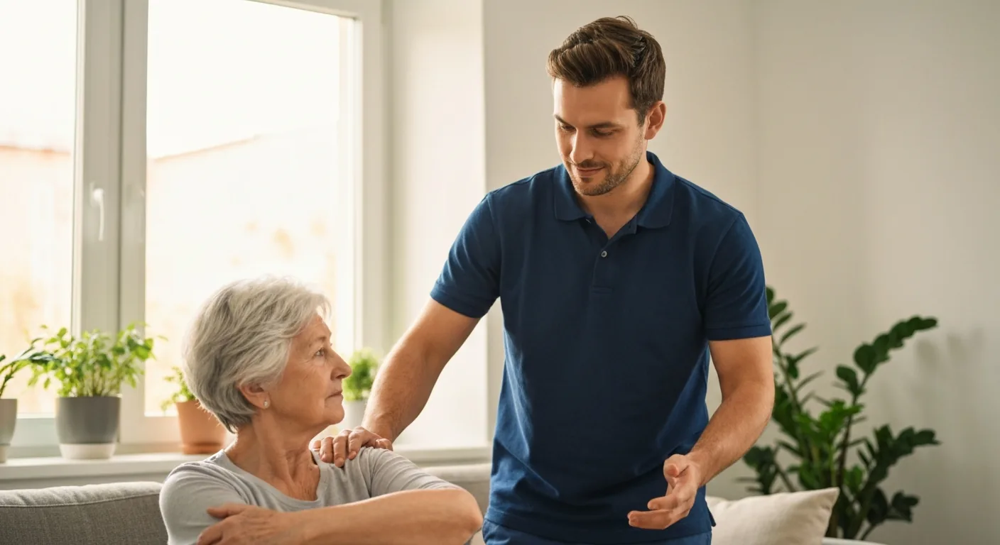
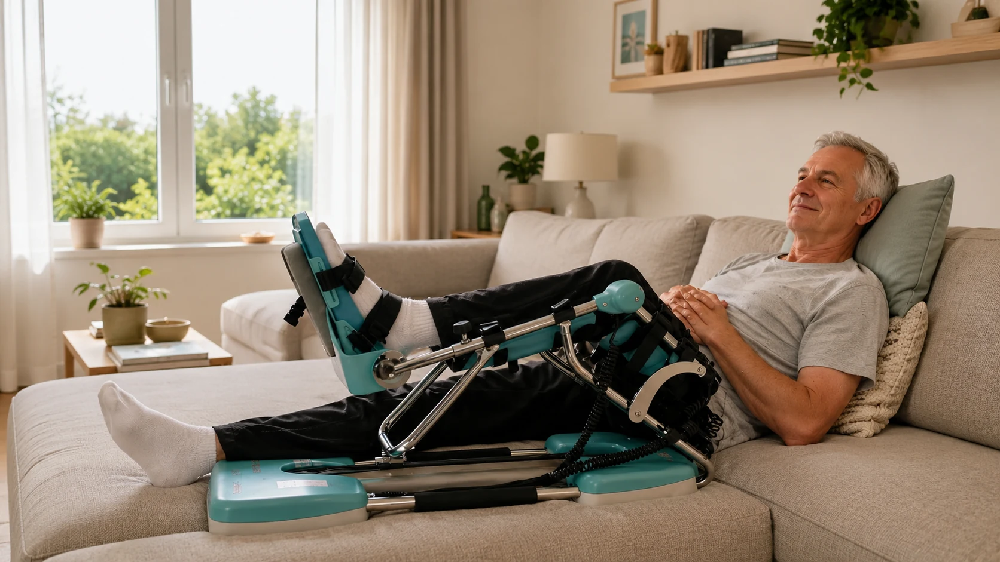
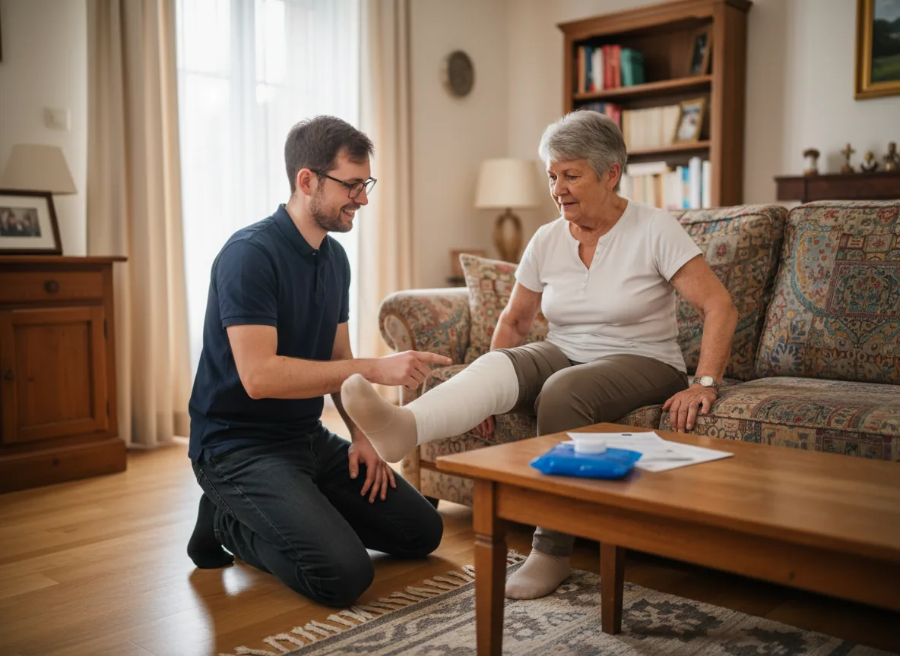
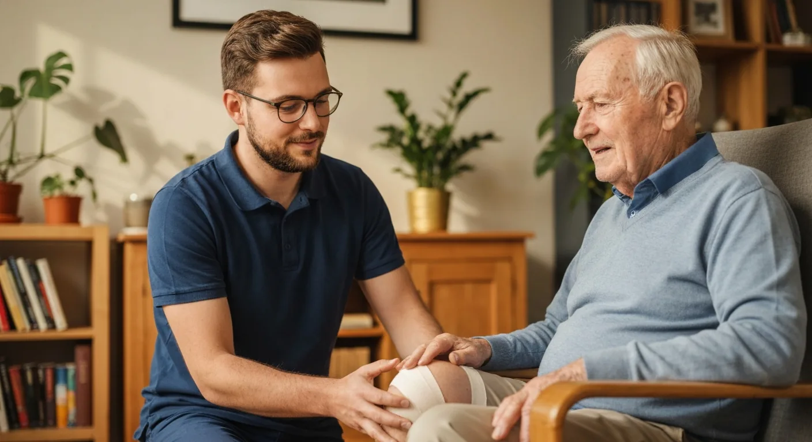
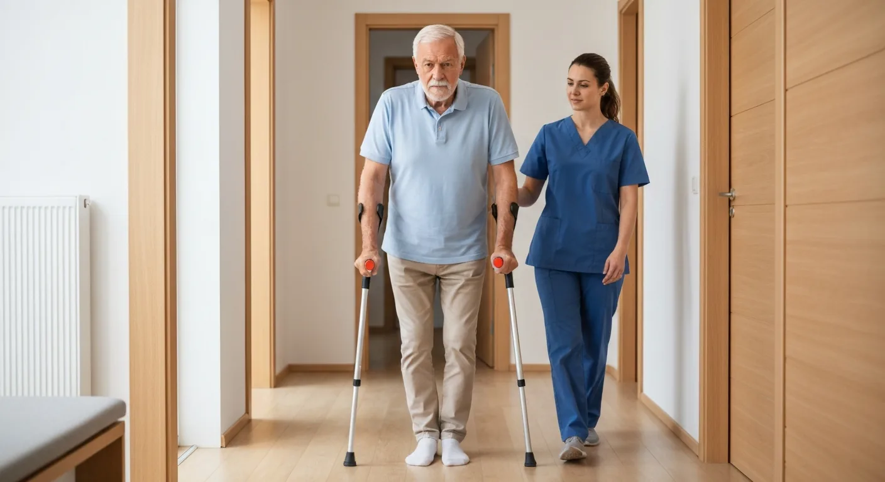
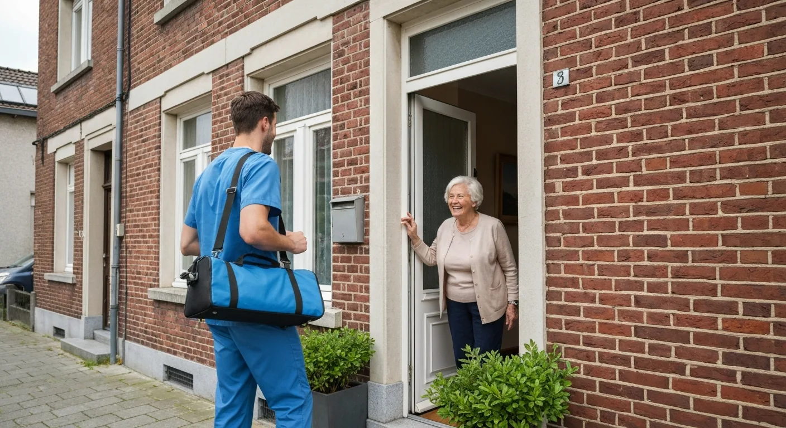
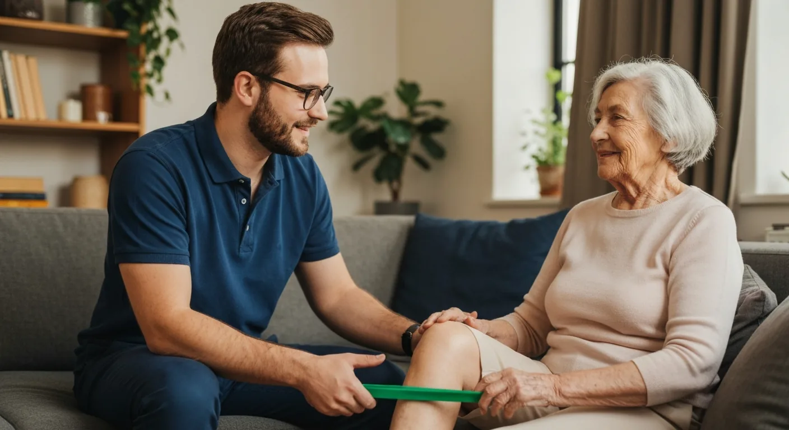

Expertadvies over kinesitherapie, revalidatie en gezondheid van onze ervaren therapeuten Timothy en Charlotte
10+ Artikelen vol praktisch advies voor optimaal herstel

Ontdek waarom steeds meer patiënten kiezen voor kinesitherapie in de vertrouwde thuisomgeving. Van comfort tot betere resultaten - lees alle voordelen.

Alles over Kinetec CPM machines voor knie-revalidatie. Instructies, voordelen en huur mogelijkheden.

Complete gids voor herstel na knie operatie. Tijdslijn, oefeningen en tips voor optimaal herstel.

Week-per-week herstel na knieprothese. Wanneer Kinetec, hometrainer en oefeningen starten. Praktische tijdlijn.

Volledig overzicht van herstel na heupoperatie. Verschil met knie, gangrevalidatie en thuisoefeningen.

Wanneer is kinesitherapie aan huis de beste keuze? 7 situaties waarin thuisbehandeling ideaal is.

Uitleg over het verschil tussen actieve en passieve revalidatie. Waarom u beide nodig heeft voor optimaal herstel.
Rugpijn? Ontdek veelvoorkomende oorzaken, wanneer u hulp moet zoeken en hoe kinesitherapie aan huis helpt.
Neem contact op met onze ervaren therapeuten Timothy en Charlotte voor persoonlijk advies